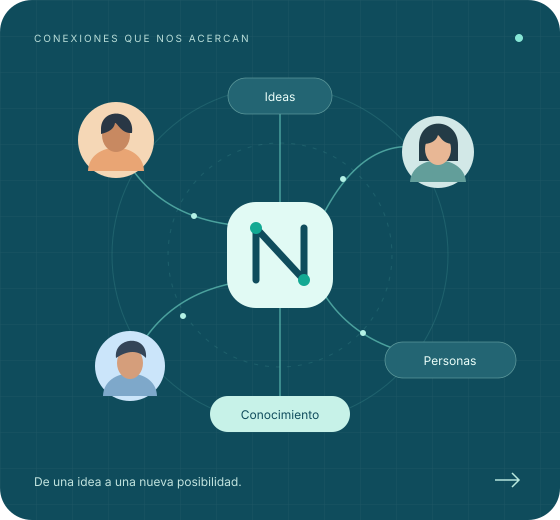

Conferencias
Ideas que abren conversaciones. Charlas con especialistas sobre tecnología, innovación y tendencias.
Comunidad tecnológica · Bajío
NexoBajío es una comunidad donde aprendemos, compartimos y utilizamos la tecnología para resolver problemas reales.
Tu curiosidad es el mejor punto de partida.

La tecnología se entiende mejor en comunidad.
Descubre NexoBajío01 / El punto de encuentro
NexoBajío es una comunidad tecnológica nacida en el Bajío con el objetivo de acercar las tecnologías de la información a estudiantes, profesionales, empresas y personas interesadas en aprender y utilizar tecnología.
Creemos en las preguntas que abren puertas, el conocimiento que se comparte y las conexiones que nos ayudan a resolver problemas cotidianos, profesionales y empresariales.
02 / Lo que nos mueve
¿Qué hacemos? Creamos espacios donde una pregunta puede convertirse en tu siguiente gran idea.
Ideas que abren conversaciones. Charlas con especialistas sobre tecnología, innovación y tendencias.
Aprender haciendo. Actividades prácticas para descubrir herramientas y llevarte nuevas habilidades.
Un buen lugar para coincidir. Encuentros con personas que comparten tu curiosidad por la tecnología.
Conexiones que suman. Vinculamos a profesionales, empresas, estudiantes y emprendedores.
Un paso más en tu camino. Espacios para desarrollar habilidades digitales, desde lo básico.
Tus dudas también tienen lugar. Buscamos ayudarte a entender un problema y encontrar orientación.
03 / Áreas de tecnología
Encuentra ese tema que despierta tu curiosidad. No necesitas saber por dónde empezar: para eso estamos.
De la curiosidad a los usos cotidianos.
Sitios y experiencias para conectar.
Ideas que se convierten en soluciones.
Hábitos para cuidar tu vida digital.
Conexiones que hacen todo posible.
Conoce lo que hay dentro de tu equipo.
Herramientas para trabajar mejor.
Acerca tus ideas a más personas.
Información para entender y decidir.
Menos tareas repetidas, más tiempo.
Servicios y proyectos en la nube.
Soluciones para un futuro eficiente.
Del primer problema a una propuesta.
04 / Nos vemos para aprender
Charlas que inspiran, talleres para practicar y encuentros para conocer a tu comunidad.
DATOS DE DEMOSTRACIÓN · Los eventos marcados DEMO son ejemplos, no convocatorias reales.
05 / Aquí también caben tus dudas
No necesitas ser experto para acercarte a NexoBajío. Nuestra comunidad busca orientarte y conectarte con personas que puedan ayudarte.
Cuéntanos tu problema06 / Una comunidad abierta
“No importa cuánto sepas de tecnología. Siempre hay algo que aprender y algo que compartir.”
07 / Da el siguiente paso
Ven con una pregunta, una idea o algo que quieras compartir.
Participa en nuestros eventos, conoce a otras personas y descubre nuevas posibilidades.
Explorar eventosAcércate a talleres y conferencias. Construye habilidades, una experiencia a la vez.
Quiero aprenderConviértete en ponente, mentor o colaborador. Tu experiencia puede abrirle camino a alguien.
Quiero compartirLas mejores conexiones empiezan con una conversación.
Quiero participar08 / Antes de sumarte
Esto es lo que quizá te estés preguntando sobre NexoBajío.
Tengo otra pregunta09 / Hablemos
¿Una duda, una propuesta o ganas de sumarte? Nos gustaría conocer tu idea.
hola@nexobajio.example
Correo de ejemplo, aún no habilitado.